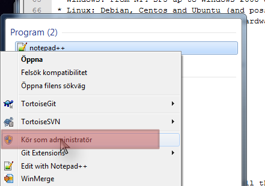
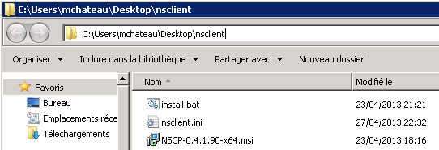

Navigation
- index
- next |
- previous |

- NSClient++ »
- 0.5.0
- Documentation »
| Author: | Mathieu Chateau |
|---|
Nsclient++ (nscp) is an agent that must be deployed on servers to be monitored. It eliminates snmp needs and goes much beyond “so called agentless” schemes like wmi by allowing execution of scripts and programs locally and returning results.
Note
This program is useless alone and requires a monitoring solution like Nagios/Icinga/Neteye/Op5. Nagios is the primary solution used by nsclient++, but NSclient++ aims to be open and as such supports many protocols so it can be integrated with various other monitoring solutions.
To facilitate NSClient++ support a series of protocols:
| Protocol | Paradigm | Comments |
|---|---|---|
| NRPE | Active | Protocol used by Nagios to speak with agent like nsclient++ |
| NSCA | Passive | Protocol used with Nagios so agent can speak to Nagios (reverse way of communication) |
| NSCP | Multiple | Nsclient++ own protocol (still under development) |
| dNSCP | Multiple | High performance distributed version of NSCP for high volume traffic. |
| NRDP | Passive | Replacement for NSCA |
| check_mk | Active | Protocol utilized by the check_mk monitoring system |
| Syslog | Passive | Protocol primarily designed for submitting log records |
| Graphite | Passive | Real-time graphing |
| SMTP | Passive | Communicate with nsclient++ through mails. More of a toy currently |
Note
You must choose at least one of these protocols to use nsclient++. They can be enabled/disabled independently.
In this document, we will cover NRPE and NSCA, as well as show how it is integrated with Nagios. If you have other protocols or monitoring solutions the general concepts can be easily adapted to any of the other supported protocols.
Nsclient++ allows many ways to check your system: * Get System health (cpu, disks...) * Get performances counters * Get WMI query * Check Log file * Check scheduled task * Execute:
** powershell scripts ** VB Scripts (.VBS) ** Executable files ** Batch (.BAT) files
To use NSClient++ you need a monitoring system deployed in your network many people use Nagios, Icinga, Neteye or Op5 but stricctly speaking NSClient++ is designed to work with any monitoring tool which can execute external scripts or support any of the standard protocols.
NSClient++ was original design to run only on Windows but since 0.4.1 is can be used on Linux as well. But currently most modules are Windows only thus the benefit on other operatingsystems are limited.
Windows:
Linux:
Before rushing on the binaries and install them, you must spend 15m in making the config file.
Warning
We do recommend that you do not skip this step, as you will have issues later and get frustrated... What is 15minutes compared to a great monitoring solution? If you still can’t afford these 15 minutes, take the config example in this doc
One important thing to understand when it comes to NSCLient++ configuration is that while most people use ini-files it is not the only posibility other options include registry and remote files. But for the reminder of this tutorial we only consider ini files since it is the normal and simplest way.
Nsclient++ config file is in the well-known INI Format. To edit it you can use any text editor such as notepad. Using advanced editors such as notepad++ you can also achive syntax coloring so that is preferable.
Also note that on Windows (after Vista) the ini file is residing in a protected space and thus you need to launch the editor as adminisrator to edit the files.
Like in all INI, section start with a name between “[]”. The first section is [/modules]. In general NSClient++ has a hierarcical settings structure much like a filesystem. THis means that everything under /settings is related to settings and so on and so forth.
** /modules ** /settings/
[/modules]
; ...
[/settings/...]
; ...
Comments are line starting by a semi-colon ”;”
; This is a comment, which appears in green on notepad++. Colors helps me a lot!
To make you configuration you first need to decide which modules you want then and configure each one of them in turn. We will start the same why by pressenting the various modules you can use and covering how to configure some of them.
Here are the available modules. Each module get loaded if enabled. You can enable all and use only one, but that may open doors for nothing and add load on your systems. There are a few ways you can enable modules, setting the value to 1, true and enabled are all correct but enabled is preferd like so:
[/modules]
NRPEServer = enabled
There is an advanced topic when it comes to modules and that is loading the same module multiple times. This is not common but since it changes the syntax we mention it for compleation. When a module is loaded multiple times it is given an alias as a key (since key names have to be unique) and thus the syntax changes into this:
[/modules]
nrpe1 = NRPEServer
nrpe2 = NRPEServer
nrpe3 = NRPEServer
Note
Moules in bold below are commonly used with nagios Nagios.
| Module | Has Config | Requires Config | Comment |
|---|---|---|---|
| CauseCrashes | Dont use this unless you want to tes the crash restart/submission tool. It will crash NSClient++ | ||
| CheckDisk | Can check various file and disk related things. The current version has commands to check Size of hard drives and directories | ||
| CheckEventLog | X | Check for errors and warnings in the event log. This is only supported through NRPE so if you plan to use only NSClient this won’t help you at all | |
| CheckExternalScripts | X | X | A simple wrapper to run external scripts and batch files |
| CheckHelpers | Various helper function to extend other checks. This is also only supported through NRPE | ||
| CheckLogFile | X | Check text files (usually log files) for patterns. | |
| CheckNSCP | Check the state of the agent | ||
| CheckSystem | X | Various system related checks, such as CPU load, process state, service state memory usage and PDH counters | |
| CheckTaskSched | Check states of scheduled tasks. Both module are exclusive (must choose one or the other). The second is only for Vista and upper (new task scheduler) | ||
| CheckTaskSched2 | Same as CheckTaskSched but targeted at Windows Vista and beyond. | ||
| CheckWMI | Make WMI Query | ||
| DotnetPlugins | X | X | Plugin to load and manage plugins written in dot net |
| GraphiteClient | X | X | Act as a Graphite Client over Graphite protocol |
| LUAScript | X | X | Extend NSClient++ with internal Lua scripts. |
| NRDPClient | X | X | Act as a NRDP Client over NRDP protocol |
| NRPEClient | X | X | Act as a NRPE Client over NRPE protocol |
| NRPEServer | X | X | A simple server that listens for incoming NRPE connection and handles them. |
| NSCAClient | X | X | Passive check support over NSCA protocol |
| NSClientServer | X | X | A simple server that listens for incoming NSClient (check_nt) connection and handles them |
| NSCPClient | X | X | A simple client for checking remote NSCP servers. |
| NSCPServer | X | X | A simple server that listens for incoming NSCP connection and handles them |
| PythonScript | X | X | Execute internal script written in Python (requires python 2.7 to be installed) |
| Scheduler | X | X | A scheduler which schedules checks at regular intervals |
| SimpleCache | Caches results for later checking | ||
| SimpleFileWriter | Write results to a file or pipe similar to NSCA |
Note
This is the only difficult part. You must tell nsclient++ how to behave for the modules you want it to run. We will cover here the most needed modules, which are in bold in previous chapter.
If you omit some settings per protocol, default values will be used. Here are the recommended default value section:
[/settings/default]
allowed hosts = IP.OF.YOUR.MONITORING.HOST
cache allowed hosts = true
password = CHECK_NT PASSWORD
timeout = 90
Note
This module is used by the check_nrpe on Nagios.
All you need to configure is who is allowed to connect as well how to handle arguments. For security reasons arguments are not allowed the idea is that a “dumb” monitoring agent is less dangerous then one which can be controlled remotely. The drawback to not allowing argument is that you need to configure everything in nsclient.ini on every single host which can obviously be cumbersome. The other option is to allow arguments but it is important to conside rhte securoty implications before doing so.
For a detailed guide on how to setup NRPE with NSClient++ step by step including debugging and testing see Using NSClient++ from nagios with check_nrpe.
A less restrictive configuration is shown here where we have allowed all kinds of arguments for simplicity.
Warning
This has security implications!
[/settings/NRPE/server]
allow arguments = true
allow nasty characters = true
allow arguments=true
;allowed hosts = IP.OF.YOUR.MONITORING.HOST
;port = 5666
Note
This is used by NSCA server on Nagios.
Another way to configure monitoring is to use what is commonly referd to as passive monitoring. This means that NSClient++ will periodically phone home when it has something to report much like SNMP traps. The main difference is that Nagios is just waiting for these informations and so doesn’t poll for them. This can avoid a lot of load by not polling for nothing. Load is also distributed on all hosts and not Nagios centric.
For a detailed guide on how to setup NSCA with NSClient++ step by step including debugging and testing see Using NSClient++ from nagios with NSCA.
[/settings/NSCA/client]
channel = NSCA
hostname = auto
[/settings/NSCA/client/targets/default]
address = address = nsca://IP.OF.YOUR.MONITORING.HOST:5667
encryption= aes256
password = Password_Which_Must_Be_Identical_On_NSCA_Server_On_Nagios
timeout = 90
Note
This allow to call arbitrary program/script through any protocol and get result back.
Using external script is the easiest way to extend NSClient++ and it. Alias allows you to shorten commands sent by preparing command line with both dynamics and static arguments.
For a detailed guide on how to setup External Scripts with NSClient++ step by step including debugging and testing see External Scripts.
[/settings/external scripts]
allow arguments = true
allow nasty characters = true
timeout = 90
[/settings/external scripts/wrappings]
bat = scripts\\%SCRIPT% %ARGS%
ps1 = cmd /c echo scripts\\%SCRIPT% %ARGS%; exit($lastexitcode) | powershell.exe -command -
vbs = cscript.exe //T:90 //NoLogo scripts\\lib\\wrapper.vbs %SCRIPT% %ARGS%
exe = cmd /c %SCRIPT% %ARGS%
[/settings/external scripts/alias]
alias_cpu = checkCPU warn=80 crit=90 time=5m time=1m time=30s
alias_cpu_ex = checkCPU warn=$ARG1$ crit=$ARG2$ time=5m time=1m time=30s
; ...skipping lines as we do provide LOT of alias for you...
alias_updates = check_updates -warning 0 -critical 0
alias_volumes = CheckDriveSize MinWarn=10% MinCrit=5% CheckAll=volumes FilterType=FIXED
alias_volumes_loose = CheckDriveSize MinWarn=10% MinCrit=5% CheckAll=volumes FilterType=FIXED ignore-unreadable
[/settings/external scripts/scripts]
check_openmanage = scripts/check_openmanage.exe
[/settings/external scripts/wrapped scripts]
check_updates=check_updates.vbs $ARG1$ $ARG2$
Note
Eventlogs are a great source of informations for monitoring. Allow real-time monitoring and extended filtering. As the subject itself is a bit complicated, start basic by grabbing all and exclude after.
Note
As it’s hard to poll all servers all the time, we prefer real time way by notifying Nagios through NSCA when something happens.
[/settings/eventlog]
buffer size = 131072
debug = false
lookup names = true
syntax =
Deploying nsclient++ and updating config file/plugins will be a major pain if not automated. We provide here guidance and free tool to deploy to all your Windows. Of course you may have already a solution like SCCM or LanDesk, which is no problem. All these tools does the same job:
- remote copying files
- Execute binaries or script
- Watch for output error code
- Return result.
If you don’t already own this tool, then we recommend to use the free version of PDQ Deploy. Yes, it’s really free, only limited to 8 computers at same time. Yes, it’s graphical and works great, even on Windows Core 2012. It can deploy both domain joined and workgroup, only need to provide credentials and source computer must have windows share access (firewall).
Note
You will need these tools after the initial setup, to maintain agents. So this won’t be a single one shot. Except if you have less than 10 servers to monitors, we heavily recommend you to have a similar solution.
Note
Just a basic “Next...Next” install. Just be sure to keep on the free version when asked.
@echo off
msiexec /i NSCP-0.4.1.90-x64.msi /passive /norestart ADDLOCAL="ALL" REMOVE="Documentation,NSCPlugins,NSCAPlugin,SampleScripts"
xcopy nsclient.ini "%ProgramFiles%\NSClient++\nsclient.ini" /q /y
net stop nscp
net start nscp
Note
This example covers windows in 64 bit. If you have x86 Windows, you need either 2 packages or add intelligence to install the good one.
Successfully tested on: * Windows Server 2003 * Windows Server 2008 R2 (core and GUI) * Windows Server 2012 (core and GUI)
Be sure to provide a folder with the MSI, built ini and bat file:
Just create a package on PDQDeploy:
Check the include entire Directory checkbox:

Soon enough you will want to deploy a modified version of nsclient++ config, or add plugins/scripts. Just create folder with the current ini file and this bat file:
@echo off
xcopy nsclient.ini "%ProgramFiles%\NSClient++\nsclient.ini" /q /y
xcopy *.ps1 "%ProgramFiles%\NSClient++\scripts" /q /y
powershell Set-ExecutionPolicy remotesigned -Confirm:$false
net stop nscp
net start nscp
By default, the Windows service run as Local System. This is simple (no access denied issue), but may lead to security issue if a breach appears (in nsclient++ or in your scripts). As with others solutions, like Microsoft SCOM, you can restrict nsclient++ power by using a Windows account.
Note
Power users group is a no go, it still there but does nothing on vista and upper. On XP and 2003, it nearly means admin right, which is contrary to the target.
Note
Using a domain account is also useful for specific monitoring, like for SharePoint.
Note
You can use Process monitor <http://technet.microsoft.com/en-us/sysinternals/bb896645.aspx> to get access denied logs.
Note
Encryption depend heavily on which communication protocol you need. For NSCA, you will need a shared passphrase and a common encryption protocol (AES in our examples).
Note
You can restrict hosts allowed to speak to nsclient++ from the config file. This add security to firewall rules, by also restricting access within the same network.
Useless to go further if basics health tests fails. Here are the basics steps to pass before going further:
| Where to check | Action |
|---|---|
| Windows server to monitor | Check that nsclient++ Windows service is started Check nsclient.log for errors Execute some dry test: * nscp.exe client –query alias_disk * nscp.exe client –query alias_event_log * nscp.exe sys –list |
| Monitoring server (Nagios...) | Check that monitoring server can reach the remote TCP port (if not udp) |
TODO
TODO
TODO
TODO